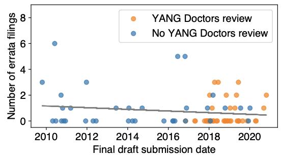
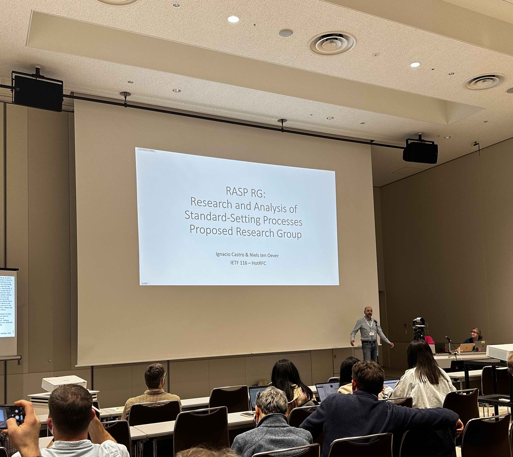
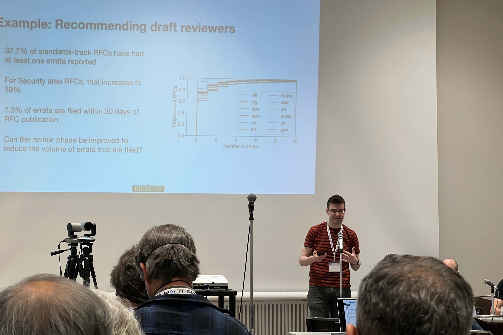

IETF 116 took place in Yokohama, Japan from March 27th through March 31st 2023, with the Hackathon held on the weekend beforehand. Many sodestream project members attended (Ignacio Castro, Stephen McQuistin, Colin Perkins, and Gareth Tyson) and were involved in activities throughout the week.
Hackathon
Kicking off the week, we took part in the Hackathon in the weekend prior to the IETF meeting. We focused on two main areas during the Hackathon: first, looking at how the tools and datasets that the projects has developed and generated so far might best be shared with the wider community. This discussion ultimately concluded with the creation of a GitHub organisation for the Research and Analysis of Standard-Setting Processes Proposed Research Group, where we will be able to contribute our code.

The impact of YANG Doctors on the rate of errata filings for YANG-related RFCs
In addition, we also continued ongoing work looking at errata filings for RFCs, and the impact that different interventions have on the rate of filings. Our early results indicate that, for example, review teams and directorates can reduce the volume of errata that are filed. This work was included in a paper that has recently been accepted to appear at the Network Traffic Measurement and Analysis Conference; we will share further details soon.
Hot RFC

Ignacio Castro presenting in the Hot RFC session at IETF 116 in YokohamaIgnacio Castro advertised the Research and Analysis of Standard-Setting Processes Proposed Research Group meeting at the Hot RFC session. This group -- the formation of which had previously been discussed at IETF 115 -- has been chartered to bring together researchers, practitioners, policy makers, standards users, and standards developers to study standardisation processes. Decision making, which is the focus of the sodestream project, is a significant part of those processes, and we look forward to contributing to the group.
Research and Analysis of Standard-Setting Processes Proposed Research Group

Stephen McQuistin presenting in the Research and Analysis of Standard-Setting Processes Proposed Research Group meeting at IETF 116
The meeting itself, led by Ignacio Castro and Niels ten Oever, was well attended, both in person and remotely, and the agenda included presentations and discussion about standards-setting processes, the data that we can collect about them, and the analysis that might be useful to conduct.
Stephen McQuistin presented the project's work on a draft reviewer recommender tool. Largely developed by Mladen Karan, the tool allows users to enter the name of a draft and indicate the type of focus that the reviewers should have. The tool then produces a list of reviewer candidates, drawn from matching the topics that IETF participants discuss on the mailing lists, with the topics that are associated with the Internet Draft.
Stephen's presentation outlined the tool, and described the mechanisms behind the matching process. The feedback gained -- both during the talk, and in e-mails afterwards -- has been valuable in further developing and extending the tool.